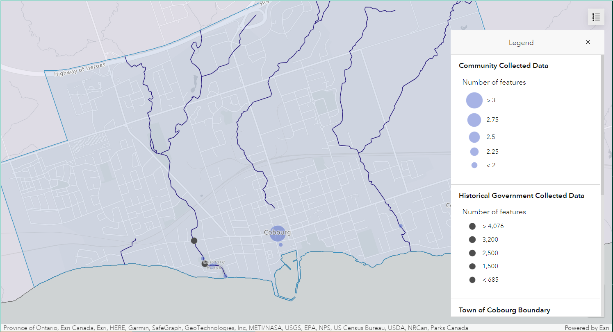
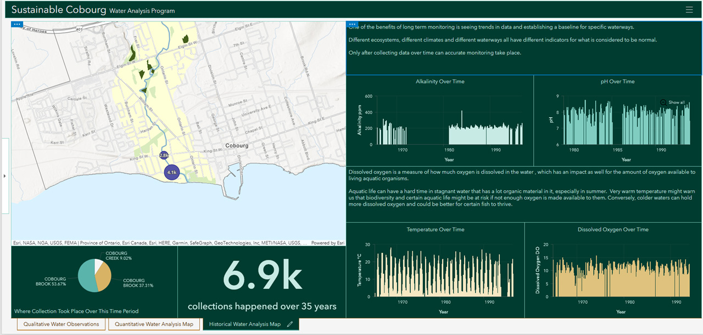
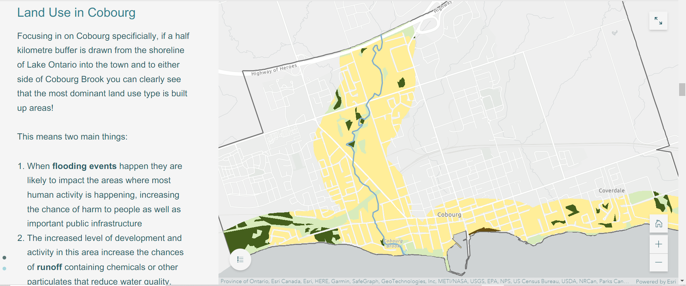

Dashboard
Figure 1: This is the first map on the dashboard, this shows the number of reported current flooding events as well as
previous flooding events. It also shows specific types of flooding such as home flooding or flooding
in recreational areas.
Figure 2: Second Map in the dashboard showing the two Provincial (Stream) Water Quality Monitoring Network (PWQMN) stations along
Cobourg Brook as well as community collected data points regaring water quality

Figure 3: Final map in the dashboard showing a 0.5 km buffer around Cobourg Brook and the land use in that buffer as well
as the locations of the PWWQMN stations

StoryMap
FIgure 4: This map shows certain land use classes within Northumberland County. The land use data was derived from the Southern Ontario
Land Information Resource System (SOLRIS) and reclassified for our purposes.
Figure 5: To encourage interaction with the Storymap, map actions were created to allow the viewer to isolate the different classes and
visualize them on their own. This map shows only built up areas.
Figure 6: This map is what the map action for showing bogs, marshes and swamps looks like.
Figure 7: A 0.5km buffer was intersected with the land use data to isolate this area and draw attention to the areas that are prone to flooding.

Figure 8: This map uses the buffered land use data layer as well as the outline of the buffer on a satellite base map to allow the viewer to visualize
land use and density in a different way.